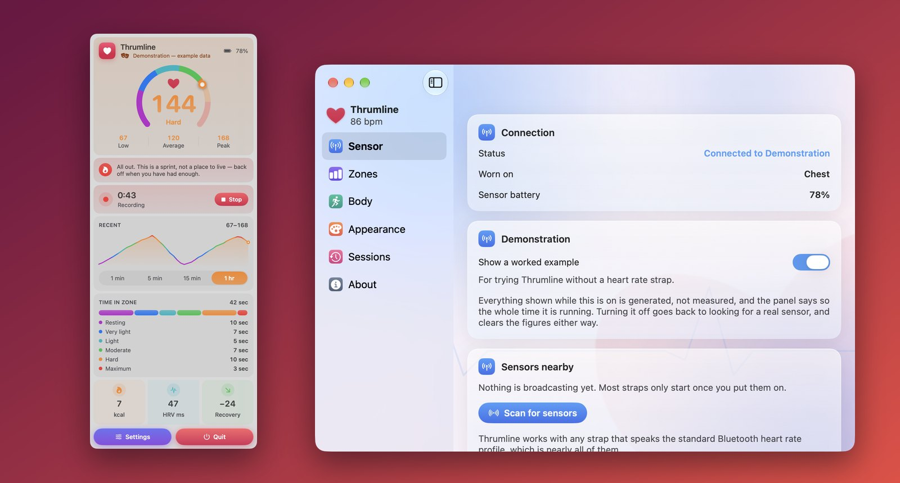

Thrumline
Din puls, live i menyraden.
Visuell simulering. I Mac-appen ansluter Thrumline till Bluetooth LE-pulsband för att visa pulsen i menyraden.

Vad den gör
Thrumline ansluter till ett pulsband med Bluetooth och håller värdet där du ser det: ett hjärta som slår i takt med ditt eget, och siffran bredvid färgad efter träningszon. Klicka på det så öppnas hela passet.
- En mätare markerad med dina egna zoner, så att en blick räcker för att se vilket intervall du är i.
- Den senaste kurvan, färgad längs hela sin längd efter zonen som varje mätvärde hamnade i.
- Tid per zon, kalorier, hjärtfrekvensvariabilitet och hur långt du har kommit ner från den senaste toppen.
- En rad om vad ditt hjärta faktiskt gör, med vanliga ord i stället för siffror.
- Inspelade pass när du vill: starta en inspelning i panelen eller under Inställningar ▸ Pass, och titta tillbaka på varje pass senare med graf, medelvärde, toppvärde och tid i zon.
- Exportera valfritt inspelat pass som en CSV- eller TCX-fil.
- En zonvarning medan du spelar in: ett ljud eller en notis när pulsen stannar utanför målzonen.
Kräver macOS 14 Sonoma eller senare. Finns på trettiofyra språk.
Vilka sensorer som fungerar
Alla band och armband som använder standardtjänsten Bluetooth Heart Rate, vilket är nästan alla – både bröstband och optiska armband. Det finns ingen lista över tillåtna enheter och inget stöd per modell: om den talar standardprofilen fungerar den.
Apple Watch stöds inte. Den sänder inte standardprofilen för puls över Bluetooth, och macOS har inget sätt att läsa det den registrerar. Det finns mer om detta, och om vad som fungerar, på supportsidan.
Ingen sensor än?
Det finns ett färdigt exempel inbyggt. Klicka på Se hur det ser ut så kör appen ett pass på fyra minuter, och du ser exakt vad den gör innan du köper ett band. Det är tydligt märkt hela tiden det pågår, så ett genererat värde kan aldrig misstas för en riktig mätning.
Molnbaserade träningsappar jämfört med Thrumline
Pulsbandsprecision direkt på din Mac-skärm utan abonnemang eller hälsodata i molnet.
| Aspekt | Molnbaserade träningsappar | Thrumline |
|---|---|---|
| Skrivbordsvisning | Låst till armbandsuret eller mobilen på andra sidan rummet | Ett bultande hjärta i realtid med färgkodad puls direkt i Mac-menyraden |
| Sensorprecision | Optiska handledssensorer som sackar efter vid intervaller | Hög EKG-precision med standardiserade Bluetooth LE-bröstbälten |
| Pulszoner | Stela åldersformler låsta bakom dyra månadsabonnemang | 5 fritt anpassningsbara pulszoner utifrån din egen fysiologi |
| Exportera pass | Inlåsta plattformar med betalväggar för fri filexport | Exportera varje registrerat pass med ett klick till öppna CSV- eller TCX-filer |
| Integritet | Laddar upp känsliga biometriska data till företags molnservrar | 100% lokalt på din Mac: ingen nätverksåtkomst, inga konton |
Integritet i ett stycke
Thrumline har ingen nätverksåtkomst alls, så dina mätvärden kunde inte lämna din Mac ens om appen försökte. Det finns inget konto, ingen analys och ingen telemetri. Dina zoninställningar och vilken sensor du senast använde sparas i appens egen sandlådebehållare. Mätvärdena i realtid hålls bara i minnet och försvinner när appen avslutas; bara de pass du väljer att spela in sparas, i samma behållare, och du kan radera vilket som helst av dem i appen. Ingenting lämnar din Mac om du inte själv exporterar ett pass som en fil. Den fullständiga integritetspolicyn säger samma sak mer utförligt.
Fler appar från samma utvecklare
Små appar som var och en gör en sak bra. Inga konton, ingen reklam, och ingen av dem spårar dig.
 StatuetteCPU, minne, disk och nätverk i menyraden.Mac
StatuetteCPU, minne, disk och nätverk i menyraden.Mac TocketteEn timer, ett drag från menyraden.Mac
TocketteEn timer, ett drag från menyraden.Mac ZonetteAlla tidszoner du bryr dig om, ett klick bort.MaciPhone och iPadAndroid
ZonetteAlla tidszoner du bryr dig om, ett klick bort.MaciPhone och iPadAndroid LunetteMånen och solen i en blick.MaciPhone och iPadAndroid
LunetteMånen och solen i en blick.MaciPhone och iPadAndroid LunaretteMånkalendern i fyra traditioner.MaciPhone och iPadAndroid
LunaretteMånkalendern i fyra traditioner.MaciPhone och iPadAndroid PausetteVarsamma pauser för ögonen och ryggen.Mac
PausetteVarsamma pauser för ögonen och ryggen.Mac PoisetteSitt rakt, påmind av AirPods du har på dig.MaciPhone och iPad
PoisetteSitt rakt, påmind av AirPods du har på dig.MaciPhone och iPad HushetteLugna bakgrundsljud som aldrig upprepas.MaciPhone och iPadAndroid
HushetteLugna bakgrundsljud som aldrig upprepas.MaciPhone och iPadAndroid TapsodyLjudet av ett mekaniskt tangentbord när du skriver.Mac
TapsodyLjudet av ett mekaniskt tangentbord när du skriver.Mac NightjarHåller din Mac vaken. Ärligt.Mac
NightjarHåller din Mac vaken. Ärligt.Mac UmbretteDämpa allt utom fönstret du arbetar i.Mac
UmbretteDämpa allt utom fönstret du arbetar i.Mac PrompetteEn teleprompter precis under kameran.MaciPhone och iPadAndroid
PrompetteEn teleprompter precis under kameran.MaciPhone och iPadAndroid TalletteEn pappersremsa för dina uträkningar.MaciPhone och iPadAndroid
TalletteEn pappersremsa för dina uträkningar.MaciPhone och iPadAndroid ProbetteAllt tekniskt om en mediefil, i klartext.MaciPhone och iPadAndroid
ProbetteAllt tekniskt om en mediefil, i klartext.MaciPhone och iPadAndroid BindetteGör ljudfiler till en riktig ljudbok.MaciPhone och iPadAndroid
BindetteGör ljudfiler till en riktig ljudbok.MaciPhone och iPadAndroid LettretteÖppna winmail.dat- och .msg-filer så som de skickades.MaciPhone och iPadAndroid
LettretteÖppna winmail.dat- och .msg-filer så som de skickades.MaciPhone och iPadAndroid Nhanh TaySätt fyra svar i ordning. Snabbt.MaciPhone och iPadAndroid
Nhanh TaySätt fyra svar i ordning. Snabbt.MaciPhone och iPadAndroid PinetteAnteckningar du har inom synhåll.MaciPhone och iPadAndroid
PinetteAnteckningar du har inom synhåll.MaciPhone och iPadAndroid UsagetteClaudes användningsgränser i menyraden.Mac
UsagetteClaudes användningsgränser i menyraden.Mac SquiggoRita tillsammans med en vänlig kompis.MaciPhone och iPadAndroid
SquiggoRita tillsammans med en vänlig kompis.MaciPhone och iPadAndroid ForemanJobb, offerter och fakturor för hantverkare.MaciPhone och iPadAndroid
ForemanJobb, offerter och fakturor för hantverkare.MaciPhone och iPadAndroid TilewakeEtt skjutpussel där bilderna vaknar.MaciPhone och iPadAndroid
TilewakeEtt skjutpussel där bilderna vaknar.MaciPhone och iPadAndroid Chăm luyệnÖvningar för vietnamesiska lågstadieelever, upplästa.MaciPhone och iPadAndroid
Chăm luyệnÖvningar för vietnamesiska lågstadieelever, upplästa.MaciPhone och iPadAndroid SalahBönetider för hela familjen.MaciPhone och iPadAndroid
SalahBönetider för hela familjen.MaciPhone och iPadAndroid KittiwakeStäll nyheterna en fråga och följ en enda signal.MaciPhone och iPadAndroid
KittiwakeStäll nyheterna en fråga och följ en enda signal.MaciPhone och iPadAndroid